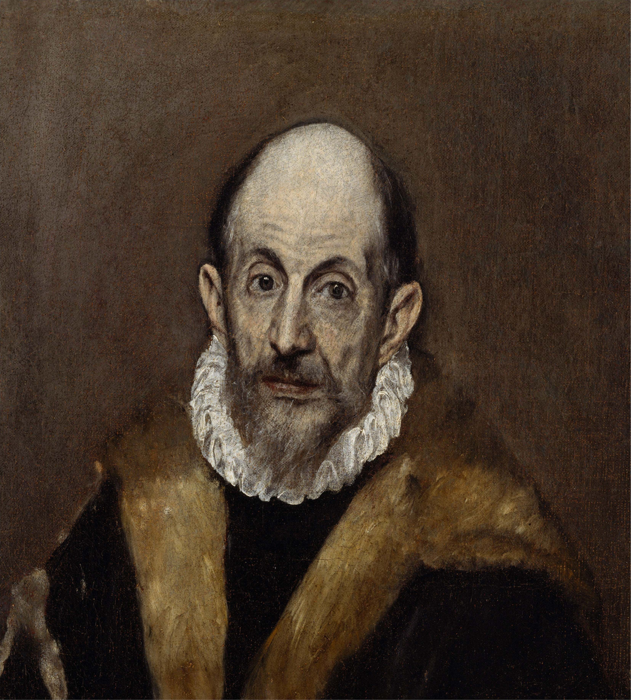
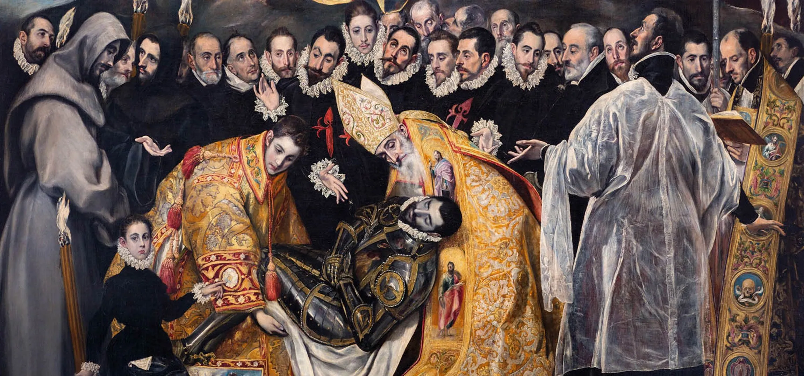
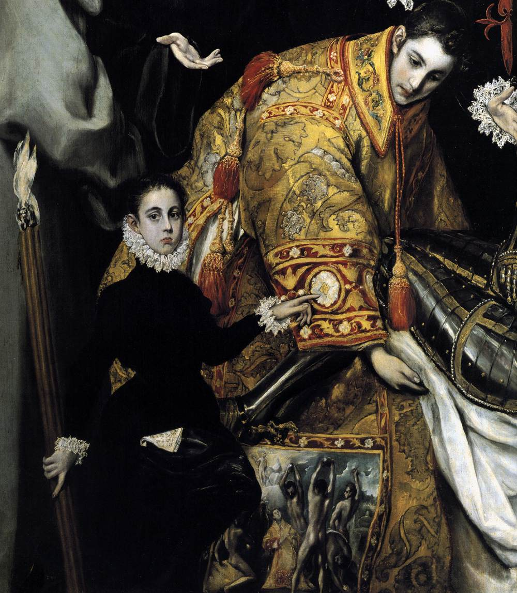
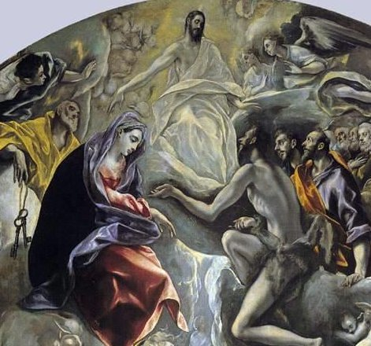
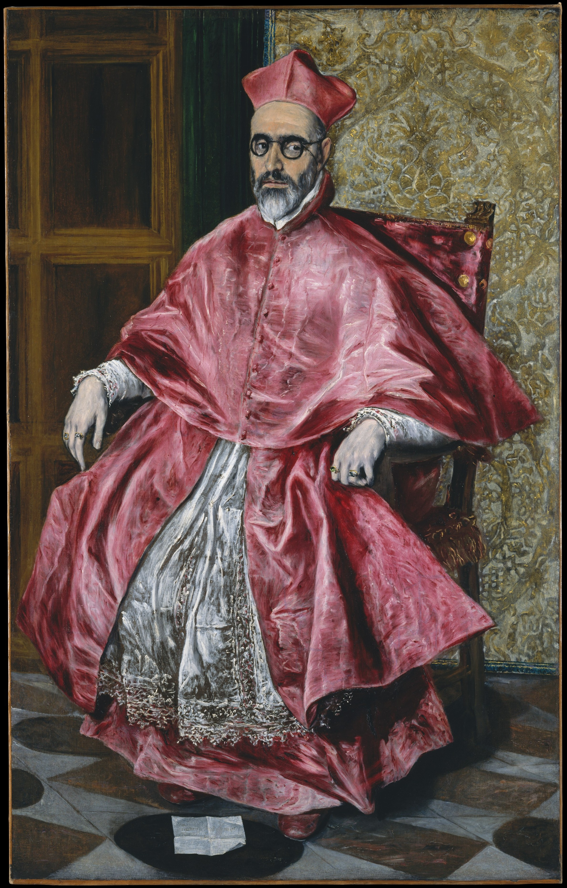
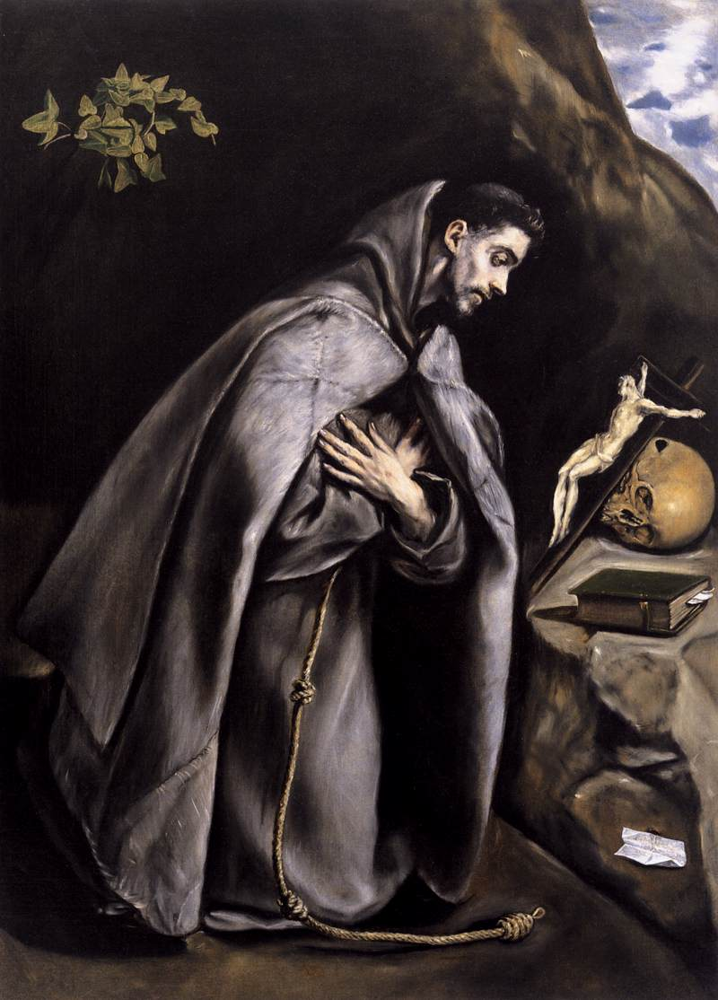
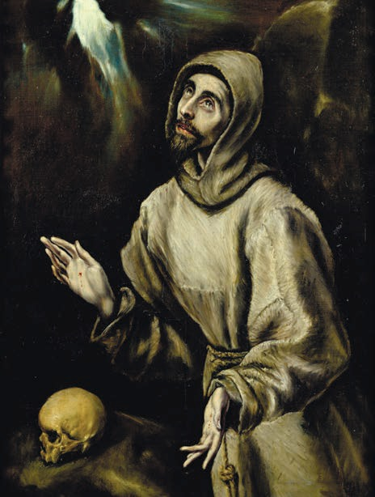
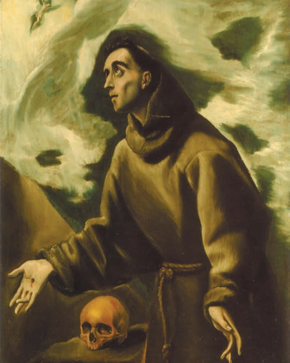
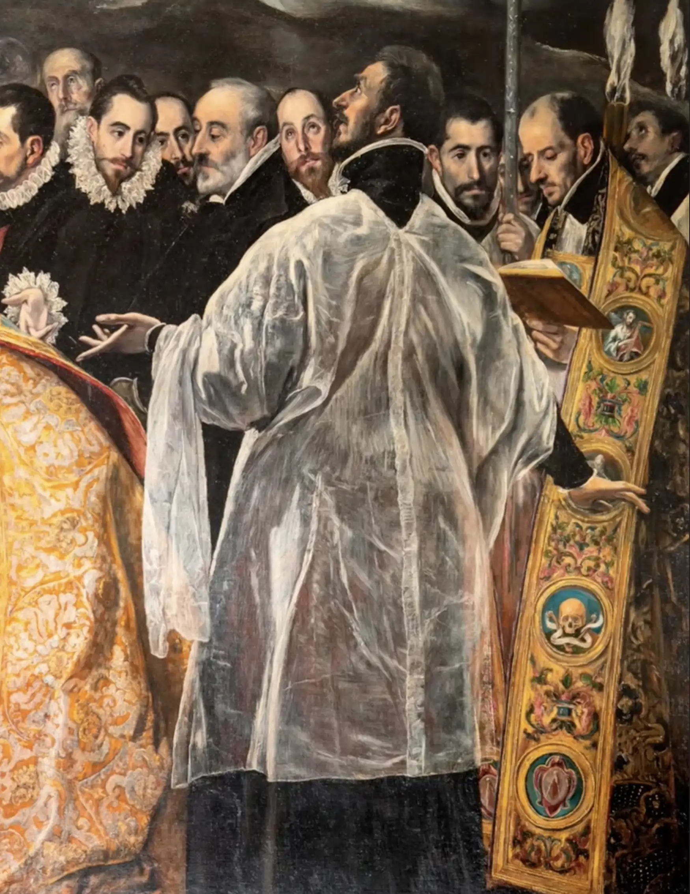
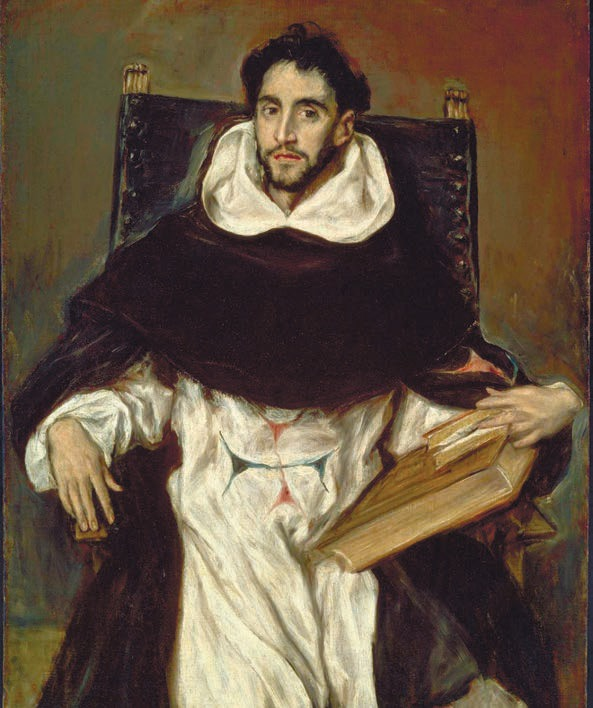

Capítulo 16
«El entierro del conde de Orgaz» — cuadro-novela de El Greco
Doménikos Theotokópoulos era, por linaje, un pintor de iconos bizantino.1 Pero su verdadera escuela artística la cursó en Italia. Fue discípulo de grandes maestros del Renacimiento italiano como Tiziano y, en especial, Tintoretto.2 Sin embargo, su patria artística y su nombre artístico —El Greco— los encontró en España. Y aunque siguió firmando como Doménikos Theotokópoulos, la cultura universal, el arte universal, lo conocen como El Greco. Y es imposible confundir un cuadro de El Greco con cualquier otro. Encontró su estilo propio, encontró su manera propia, por la que lo reconocemos de inmediato y decimos: «Este es un cuadro de El Greco».
«El entierro del conde de Orgaz» es uno de los cuadros más célebres de El Greco. Es, por así decirlo, un cuadro total, un cuadro-novela. No tiene otros cuadros-novela semejantes: con distintas líneas argumentales, distintas formas, distintas búsquedas espaciales.
El cuadro «El entierro del conde de Orgaz» fue un auténtico encargo estatal.3 Este encargo lo hizo el sacerdote y párroco de la iglesia de Santo Tomé, en la que el propio El Greco era feligrés. El comitente de este cuadro fue Andrés Núñez, que en el propio cuadro está representado con el libro de oraciones en las manos. Más aún: no fue un simple encargo estatal; el comitente explicó con todo detalle lo que deseaba ver en el cuadro y pidió a El Greco que siguiera esa descripción. Y quería ver en el cuadro cómo los santos grandes mártires entierran personalmente al conde de Orgaz, la gran leyenda de la historia española. Y deseaba que en ese entierro estuvieran presentes todos sus contemporáneos, todos los grandes ciudadanos de la ciudad de Toledo; deseaba glorificarlos en ese cuadro. Quería también que se mostrara a qué alturas llega el alma del conde de Orgaz, porque Juan el Bautista y la Virgen María interceden ante el Todopoderoso por su alma, que los ángeles conducen hacia lo alto. Así era la descripción. Y El Greco siguió esa descripción, siguió las exigencias del encargo estatal. Pero, por supuesto, nunca ninguno de los guiones que se proponen al director se realizará estrictamente según el plan propuesto. El guion lo ejecutan el director y los actores. Por eso, en este caso, Andrés Núñez es solo el guionista, mientras que El Greco es el director-ejecutor, un pintor con una imaginación creadora inmensa y con un dolor propio muy profundo. Ese dolor vivía en él como en un hombre muy sensible al tiempo.

«El entierro del conde de Orgaz» es un gran retablo de altar: casi cinco metros de alto y casi cuatro de ancho. Este retablo tiene una composición parecida al pórtico de una iglesia católica, porque el pórtico de una iglesia católica tiene siempre dos partes: la puerta, es decir, la entrada, y la parte superior, que se llama tímpano. Y este cuadro de El Greco se divide exactamente en dos partes.

Hay aquí un pórtico, delimitado por una galería de retratos de la nobleza toledana, de los hidalgos toledanos. Pintó a todos sus conocidos, pintó a todos los hombres célebres y gloriosos de la ciudad de Toledo. En este cuadro dejó un retrato colectivo de la intelligentsia española, de la nobleza española de su tiempo. Es algo muy interesante y prácticamente sin precedentes.
Toda la parte inferior del cuadro es el entierro del conde de Orgaz, que murió siglos atrás (vivió a comienzos del siglo XIV)4. Y solo a finales del siglo XVI este entierro fue plasmado por el pintor. Hay que decir que Gonzalo Ruiz de Toledo, conde de Orgaz, era una leyenda de España. El conde de Orgaz era un hombre de gran poder político: era alcalde de la ciudad de Toledo, casi el dueño de la ciudad. Hizo muchísimas obras notables: fundó allí el hospital y el monasterio de San Agustín. Precisamente por eso lo entierra San Agustín con los hábitos, a su derecha. A la izquierda, San Esteban.
Sobre el manto dorado de San Esteban, que junto con San Agustín entierra al conde de Orgaz, con el pincel finísimo de El Greco está pintado otro cuadro más, por sus valores artísticos igual a todos los cuadros de El Greco. Es un cuadro dentro del cuadro. Representa el pasado del propio San Esteban, cuando estaba aún en el mundo, y cómo murió por la fe: lo apedrearon. Y vemos con total precisión ese cuadro de la lapidación de San Esteban. Vemos el pasado de San Esteban, mientras que aquí está su misión de pasado a futuro: entierra al conde de Orgaz, pues el conde de Orgaz, según sus contemporáneos, era digno de semejante entierro público en el tiempo. Al conde de Orgaz lo entierran mística, metafísicamente. La nobleza española, contemporánea de Doménikos Theotokópoulos, entierra a un hombre que murió a comienzos del siglo XIV. Más aún: lo entierran los santos.

Y el guía hacia el interior de este mundo asombroso es un niño pequeño que está junto a un gran cirio. Es Jorge Manuel, el hijo de El Greco. Lleva un pañuelito blanco en el cinturón, y allí está escrito cómo se llama y cuándo nació: en 1578.5 Jorge Manuel no solo es el guía en este cuadro: en general fue ayudante de El Greco y, probablemente, su único discípulo.6 Aprendió a copiar las obras de su padre, por eso muchas cosas de El Greco las vemos en copias de Jorge Manuel, cuyo retrato nos dejó El Greco.

Este niño nos mira y hace un gesto señalando con la mano, y nosotros pasamos ante este cuadro durante siglos, lo miramos, y este niño une el futuro con un pasado muy, muy lejano, que también era pasado para él. A través de este niño El Greco expresó la combinación de dos tiempos: el tiempo futuro y el tiempo pasado. Une el tiempo real y el tiempo mistérico, mítico. En rigor, no hay frontera entre ellos, o esa frontera es muy, muy fina. Pasado y futuro se unen, por así decirlo, entre sí. La finitud del hombre es relativa; la vida eterna no termina con la vida real del hombre, continúa en el tiempo. Y he aquí que a finales del siglo XVI entierran a un hombre que vivió a comienzos del siglo XIV. Y plasma este cuadro El Greco, que introduce a su héroe en el tiempo futuro. Pues ¿quién conocería hoy al conde de Orgaz? Muy pocos, si no fuera por El Greco.
Es un cuadro de contenido muy complejo, un cuadro-novela, el único en El Greco. Es un cuadro de múltiples argumentos, de múltiples espacios. Tiene también un plano puramente místico: ese tímpano superior, cuando los ángeles con vestiduras doradas llevan ya el alma desencarnada, ya completamente despojada de carne, del conde de Orgaz hacia el trono de la Deesis. Allí está representada esa orden de la Deesis: el Salvador con vestiduras resplandecientes, la Madre de Dios, Juan el Bautista —intercesores, abogados por nosotros en el Juicio Final—. Y el alma del conde de Orgaz comparece ante ellos. Es una visión: el modo en que El Greco se representa el acto solemne de la entrega del alma a las fuerzas superiores.

Después de que en 1588 este cuadro fuera expuesto en la iglesia de Santo Tomé, tuvo un éxito enorme entre el público. Por supuesto, la fama de Doménikos Theotokópoulos, El Greco, era increíblemente grande, y empezó a recibir encargos, sobre todo encargos de retratos. Se convirtió en un retratista muy célebre y nos dejó una galería de sus contemporáneos. Entre sus retratos hay también el del gran inquisidor7 de España, que se llamaba Niño de Guevara.
Con Niño de Guevara relacionan los historiadores la llegada de El Greco a Toledo. Como si Niño de Guevara, siendo un joven sacerdote, hubiera llegado a Italia con alguna misión diplomática especial, allí hubiera visto a este griego y simplemente se hubiera enamorado de él. Incluso coleccionaba sus obras; fue él quien invitó a El Greco a España.8 Pero ese mismo Niño de Guevara se convirtió en gran inquisidor, que decía una sola palabra: «¡A la hoguera!». Su rostro causa horror. Es el rostro de una crueldad fanática e inflexible. Los ojos están subrayados por enormes gafas de concha con patillas detrás de las orejas. Y como gran inquisidor, comprendía bien la inaprehensibilidad espiritual, la rebeldía interior, la muy profunda clarividencia de El Greco. Y hasta donde se sabe, El Greco fue llamado repetidamente a declarar ante la Inquisición9, pero al final salía de allí sin daño. Por qué era así, es muy difícil decirlo. Quizá gracias a ese extraño sentimiento que Niño de Guevara experimentaba hacia El Greco. Probablemente sea el mismo sentimiento que se atribuye a Stalin respecto a Bulgákov: sentía debilidad por él, simpatía e interés.

Imagínense ustedes qué enorme tensión reinaba en la atmósfera, no solo de esta ciudad, sino de España en general. Por un lado, es el tiempo del mayor florecimiento de la cultura española, el tiempo de un auténtico Renacimiento español que está llegando. Y por otro lado, es el trabajo serio y cruel de la Inquisición española. Es una extraña conjunción, y un artista de una sensibilidad tan grande como Doménikos Theotokópoulos sentía esa sobretensión de todas las fuerzas espirituales, la sensación de vivir al borde, en una frontera muy fina entre el ser y el no-ser… Recordemos Rusia, el Moscú de los años treinta. Por un lado, una constelación extraordinaria de escritores, poetas y pintores; por otro, el trabajo ininterrumpido del NKVD. Pues bien, es exactamente lo mismo. Solo que en Rusia se expresaba de otro modo: en Rusia estaban Platónov, pintores notables, escritores como Olesha, Zamiatin, Bábel.10 Había teatros como el de Meyerhold. En Rusia había una vida espiritual muy intensa, una enorme cantidad de gente con talento, un florecimiento increíble del teatro, de la música. Y lo más cercano a esta sensación del mundo interior de El Greco es, probablemente, Dmitri Dmítrievich Shostakóvich. Él tiene el mismo sentimiento del umbral.
El Greco tiene un cuadro notable dedicado a Francisco de Asís. Francisco de Asís está de pie y sostiene una calavera en las manos. Y he ahí ese movimiento de las manos con que sostiene la calavera, y esa extraña reflexión en sus ojos… Por supuesto, no es una reflexión sobre el «¡Pobre Yorick!», porque San Francisco no podía discutir la muerte del bufón Yorick con la misma ironía con que la discute Shakespeare. Es algo muy serio; es un pensamiento constante, no sobre la muerte, sino sobre esa finísima frontera que separa tu ser del no-ser y de lo que hay más allá de la frontera de ese ser.



Si se mira con atención la ropa de Andrés Núñez, en la franja dorada de su vestimenta sacerdotal se ve una calavera, que para argumentos de este tipo no corresponde. Y no porque la calavera signifique memento mori —«recuerda que has de morir»—, no. La cuestión es que a El Greco mismo este tema no es que le ocupe: vive, por así decirlo, en él.

Es muy importante el lenguaje que emplea el artista, pero aún más importante es hasta qué punto está en consonancia con su tiempo, cómo lo siente, cómo lo vive, cuánta comprensión hay en él del conflicto, del dolor, del peligro, de esa finísima frontera que separa tu vida real, tu vida cotidiana, de una muerte completamente imprevisible. Exactamente así vivía el Moscú de 1935 o 1937, esperando cada día que llamaran a la puerta de noche: «al borde del abismo tenebroso».11
Y esto era muy importante para El Greco. En el cuadro «El entierro del conde de Orgaz» todo esto está concentrado. Cuando uno mira sus retratos, las infinitas representaciones de temas evangélicos, de los santos grandes mártires, de hombres que sufrieron por sus convicciones, que vivieron al borde del ser y del no-ser, recuerda las palabras de Ajmátova: «carne que casi se ha vuelto espíritu»12. Estos retratos están penetrados de sufrimiento y tensión, como el célebre retrato del helenista sordomudo.13 Cuando uno mira este retrato, comprende que este hombre es sordomudo; El Greco logró transmitirlo: esa cerrazón de los labios, la finísima línea de la boca, las orejas. Transmitió también esa tensión nerviosa, el sufrimiento, la gran tristeza de sus ojos dorados.14 Y si se mira aún con más atención la pintura de El Greco, se verá que sus imágenes viven en una extraña dimensión intermedia.


Los investigadores de la obra de El Greco prestaron mucha atención a la cuestión de qué significa su verticalismo: figuras alargadas, muy refinadas, pintadas de un modo muy complejo. ¡Y qué manos tan delicadas, qué rostros tan sutiles y admirables! Dicen que tenía astigmatismo vertical15 y que, en general, pintaba a la luz de las velas. No, la cuestión no está en el astigmatismo vertical. Era la aspiración a transmitir el momento de la desencarnación, en la frontera de la transformación de la carne en sustancia espiritual. Es una especie de mundo intermedio, lleno de luz y de espíritu, ya la pérdida del peso físico, pero todavía no la transformación definitiva en esa incomprensible sustancia espiritual. Y si volvemos a la gran imagen de «El entierro del conde de Orgaz», veremos un detalle asombroso. El alma del conde de Orgaz es llevada hacia lo alto por un ángel con vestiduras doradas, pero esa alma parece una sustancia incomprensible, que ha perdido completamente la carne, y que comparece ante el juicio.
Este cuadro, sin duda, puede llamarse novela con una gran cantidad de argumentos en su interior. Son argumentos que pertenecen a tiempos distintos; el cuadro es un montaje. El niño une el futuro con el presente y el pasado. San Esteban, que es una figura revelada, muestra en su ropa su propio pasado: la lapidación. Aquí está también San Agustín, cuyo monasterio fue construido por el conde de Orgaz. Esto es una novela, cuando el pasado lejano, el mundo imaginado y el mundo real se unen entre sí en una obra enorme con distintos capítulos, pero con un tema único. Este tema no es solo la reflexión de El Greco sobre qué es el tiempo, qué son el pasado y el futuro y cómo se unen entre sí. Es también la reflexión sobre qué es el mundo físicamente tangible, real, y el mundo ya desencarnado, que ha perdido la realidad de la envoltura. ¿Cómo están vinculados entre sí estos dos mundos? Por un tabique muy fino, casi imperceptible. He aquí que ustedes están ahora en este mundo real. Estos son sus amigos, aquí los ven, aquí están entre ellos… un chasquido, y se convierten en pasado, en sustancia, que Dios quiera que tenga intercesión.
Es un detalle muy importante. Ante nosotros está el conde de Orgaz, a quien los contemporáneos de El Greco han redimido con sus oraciones. No redimido de sus pecados. Andrés Núñez lee el libro de oraciones del oficio de difuntos. Ya consideraban al conde de Orgaz un santo; simplemente afirmaron a través de este cuadro su pertenencia a los santos, pero es un santo redimido por sus oraciones. Recordemos el episodio del «Hamlet» de Shakespeare, cuando Hamlet pide a Ofelia que se vaya a un monasterio.16 Ella no comprende por qué. Hamlet le explica: para que con sus oraciones lo redima. Él conoce su futuro; necesita que alguien lo redima rezando. Es una idea muy importante: que alguien no solo lo recuerde, sino que lo redima con la oración. Es una parte muy importante de la cultura espiritual que, por desgracia, ha desaparecido absolutamente de nuestra vida. Pero fue propia de la cultura durante muchísimo tiempo. Y en el cuadro de El Greco esto está, sin duda, presente.
Lo principal en este cuadro es la angustia de esa frontera tan estrecha que separa nuestra vida del no-ser, y la esperanza de que ese no-ser se convierta en eternidad. Pero para El Greco ese no-ser no se convirtió en no-ser, sino en su verdadera gloria, su eternidad. Por eso aquí hay un eco entre el no-ser y la inmortalidad del conde de Orgaz, en presencia del cual está una serie histórica de hombres. El tiempo lo honra. Exactamente así el tiempo honra también a El Greco. Es un cuadro-novela con un contenido muy profundo. Su contenido es más profundo de lo que vemos a primera vista, porque es una gran reflexión sobre el tiempo, sobre la vida, sobre la eternidad y sobre qué es la muerte. Y estos siguen siendo hoy los problemas más importantes de nuestra vida.
Notas del editor
1. Doménikos Theotokópoulos (Candía, Creta, 1541 – Toledo, 1614) fue, efectivamente, pintor de iconos: en 1563 ya figura como «maestro» en Candía. Pero no consta que procediera de una familia de pintores. Su padre y su hermano Manusos eran comerciantes y recaudadores de impuestos al servicio de Venecia, que gobernaba la isla. «Por linaje» es la lectura literal del ruso «потомственный» y refleja la idea de la autora, no un dato documentado.
2. Su relación con Tiziano la atestigua una carta de Giulio Clovio (1570), que lo presenta en Roma como «discípulo de Tiziano». Con Tintoretto no hay prueba documental de aprendizaje: se trata de una influencia de estilo, muy visible en sus obras venecianas.
3. «Encargo estatal» (en ruso, «госзаказ») es un anacronismo deliberado de la autora, tomado del léxico soviético. En realidad fue un encargo parroquial. El contrato lo firmaron en marzo de 1586 El Greco y el párroco Andrés Núñez de Madrid, y el cuadro se entregó en 1588.
4. Gonzalo Ruiz de Toledo murió en 1323. No fue conde: era señor de Orgaz; el condado se creó en 1522 para sus descendientes. Tampoco fue «alcalde» de Toledo en sentido moderno. Fue notario mayor de Castilla y una figura principal de la ciudad. Según la leyenda, san Esteban y san Agustín bajaron del cielo a enterrarlo en agradecimiento por sus donaciones, entre ellas la reconstrucción de la iglesia de Santo Tomé y la dotación del convento agustino de San Esteban. Esa es la razón de que sean precisamente estos dos santos.
5. El pañuelo lleva, en griego, la firma del pintor («Doménikos Theotokópoulos lo hizo») seguida de la fecha 1578, que es el año de nacimiento de Jorge Manuel. No lleva el nombre del niño.
6. No fue el único: en el taller de El Greco trabajaron también Francisco Preboste y, sobre todo, Luis Tristán, que llegó a ser un pintor de personalidad propia.
7. El cardenal Fernando Niño de Guevara (1541–1609) fue inquisidor general de 1599 a 1602. La identificación del retrato del Metropolitan con él es tradicional, pero hay quien propone al cardenal Bernardo de Sandoval y Rojas.
8. No hay fundamento documental para esta historia. El Greco llegó a Toledo en 1577, probablemente gracias a Luis de Castilla, a quien había conocido en Roma, en el círculo del cardenal Alejandro Farnesio. Luis era hijo del deán de la catedral, Diego de Castilla, que le encargó los retablos de Santo Domingo el Antiguo.
9. No consta ningún proceso inquisitorial contra El Greco. Lo que sí está documentado es que en 1582 actuó como intérprete del Santo Oficio en el proceso de un griego. Sus pleitos conocidos, como el del «Expolio» con el cabildo de la catedral o el del Hospital de Illescas, fueron por dinero.
10. Zamiatin emigró en 1931 y murió en París en 1937, así que no vivió el Moscú de 1935–1937 del que habla la autora. Bábel fue fusilado en 1940.
11. Cita de «Festín en tiempo de peste» (1830), de Pushkin, en la canción de Walsingham: «Hay embriaguez en el combate, / y al borde del abismo tenebroso…».
12. Verso de «Poema sin héroe» (1940–1965), de Anna Ajmátova: «Плоть, почти что ставшая духом».
13. Se trata de Antonio de Covarrubias y Leiva (1524–1602), jurista y helenista toledano, amigo del pintor. Se quedó sordo en la vejez, pero no era mudo. El Greco lo retrató hacia 1600 (Museo del Louvre; hay otra versión en el Museo del Greco de Toledo).
14. El índice de láminas del libro asigna a este capítulo el retrato del predicador y poeta trinitario Hortensio Félix Paravicino (1580–1633), aunque el texto no lo menciona. Se coloca aquí, junto a los retratos de los que habla la autora.
15. La hipótesis del astigmatismo la formuló el oftalmólogo Germán Beritens (1913). Hoy está descartada: un defecto óptico afectaría por igual a la percepción del modelo y del lienzo, y además El Greco pinta sin deformar otras figuras de la misma obra.
16. La autora mezcla dos momentos de la misma escena (acto III, escena 1). Hamlet empieza pidiendo a Ofelia que lo recuerde en sus oraciones: «Nymph, in thy orisons / Be all my sins remember’d». Solo después le dice «Get thee to a nunnery», pero entonces no para que rece por él, sino para que no engendre pecadores.